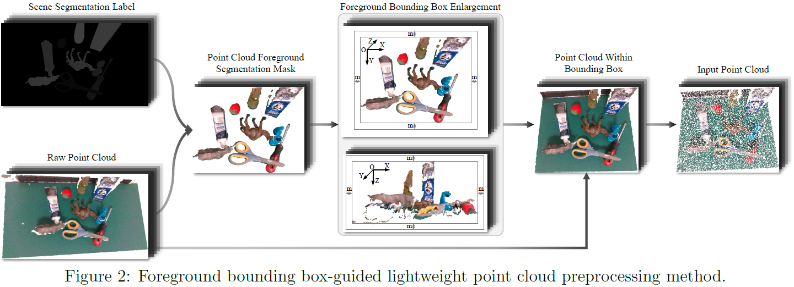
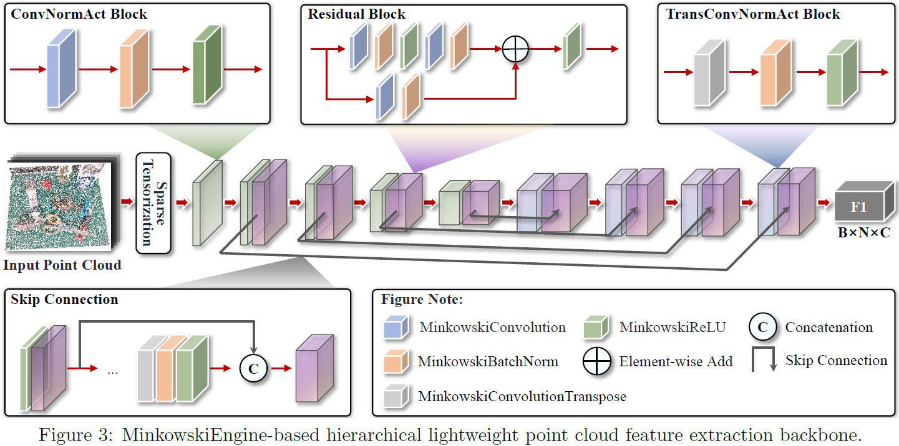
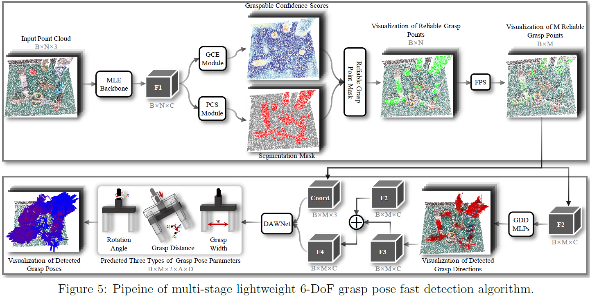
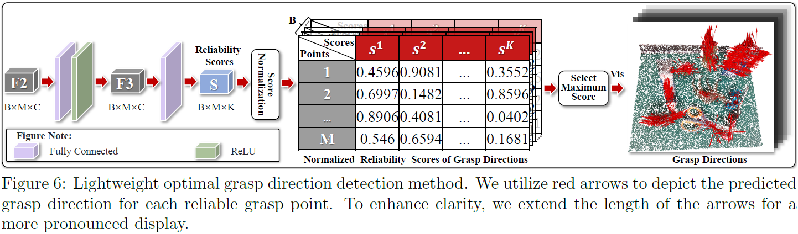
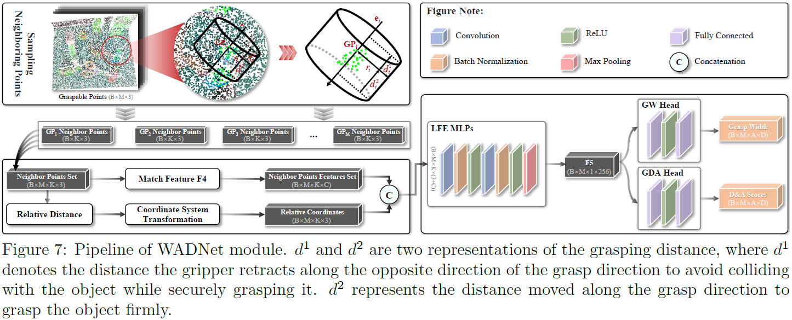
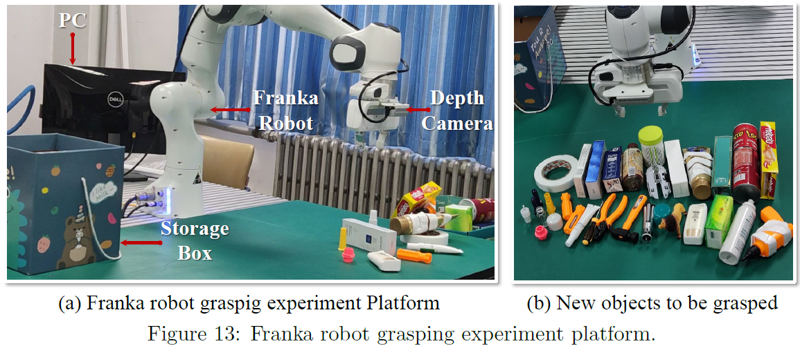

To address the real-time and precise detection of robotic grasping poses, we proposed the GraspFast algorithm.
We conducted extensive experiments on the actual Franka robot, demonstrating that our GraspFast algorithm achieves real-time and accurate detection of grasp poses for various general objects.
To achieve real-time and accurate detection of grasp poses for general objects, we optimized and accelerated the detection process across multiple stages including data processing, feature extraction, and grasp parameter prediction. Below are specific optimization strategies for each part:
FBB Method

MLE Backbone

GraspFast Algorithm

LGD Method

WADNet Module

Real Robot Grasp Experiments
Experimental Platform For Visual Servoing Franka Robot Grasping
To validate the effectiveness of our GraspFast algorithm in real-world, we set up a grasping experiment platform using a Franka Emika robot and an Intel RealSense D435i depth camera, as shown in the figure below. We deploy our trained GraspFast model on a PC (Nvidia RTX 1080Ti, Intel Core i7-10700K CPU) for inference. To verify the generality of our GraspFast, all objects used in experiments are novel.

Franka Grasping with Single Object
We randomly selected one object for visualization of Franka robot grasping.
Franka Grasping For Cluttered Scene (Small Objects)
We conducted grasping experiments with a real robot in cluttered scenes containing only small objects. We visualized the entire grasping process.
Franka Grasping For Cluttered Scene (Large Objects)
We conducted grasping experiments with a real robot in cluttered scenes containing only Large objects. We visualized the entire grasping process.
Franka Robot Grasping For Cluttered Scene (Mixed Objects)
We conducted grasping experiments with a real robot in cluttered scenes containing mixed scale objects. We visualized the entire grasping process.
Franka Robot Grasping For Cluttered Scene (Mixed Objects)
We conducted grasping experiments with a real robot in cluttered scenes containing mixed scale objects. We visualized the entire grasping process.
Failure Case of Single Object Grasping
Due to the static friction force being less than the weight of the screwdriver, Franka failed to successfully lift the screwdriver when gripping it.
Failure Case of Multi Objects Grasping
Bias in grasp pose detection in cluttered scenes with multiple objects.